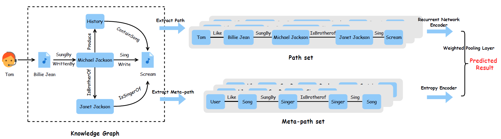

Research on Path-enhanced Explainable Recommendation with Knowledge Graphs.
 Picture by Yafan Huang
Picture by Yafan Huang
Abstract
Recommender systems, in order to predict user requirements precisely, act as a vital role in modern internet industry. As an effective tool with rich semantics, knowledge graph has captured growing research attention in enhancing recommendation results recently. By mining multi-hop relations (aka. paths) between user-item interactions within knowledge graph, implicit user preference and other side information can be clearly uncovered. Nevertheless, existing knowledge graph-based recommendation methods have two fundamental limitations: Firstly, the indiscriminate utilization of user-item path sets conveys unclear information and negatively influence the explainability. Moreover, reliable recommendation results with these methods require massive prior knowledge, which indicates they show poor performance in accuracy and handling cold-start issues. To address these issues, we propose a novel model named Path-enhanced Recurrent Network (PeRN). Specifically, PeRN integrates a recurrent neural network encoder with a meta-path-based entropy encoder to further increase explainability, accuracy and reduce cold-start costs. Recurrent network encoder has a strong ability to represent sequential path semantics in knowledge graph, while entropy encoder, as an efficient statistical analysis approach, leverage meta path information to differentiate paths in one user-item interaction. A path extraction algorithm with a bidirectional scheme is also proposed to make PeRN more feasible. Experimental results on two real-world datasets demonstrate our significant improvements with reasonable explanations, promising accuracy and minimal amount of prior knowledge compared with several state-of-the-art baselines. Picture below illustrates the overall framework of our proposed model:

Progress
Now under revision. Early rejected by IJCAI 2020 with 1a, 1wa, 1wr, 1r and CIKM 2020 with 1wa, 1r, 1wr.
Yafan Huang
Master Student
My research interests include natural language processing, knowledge graph and recommender system.